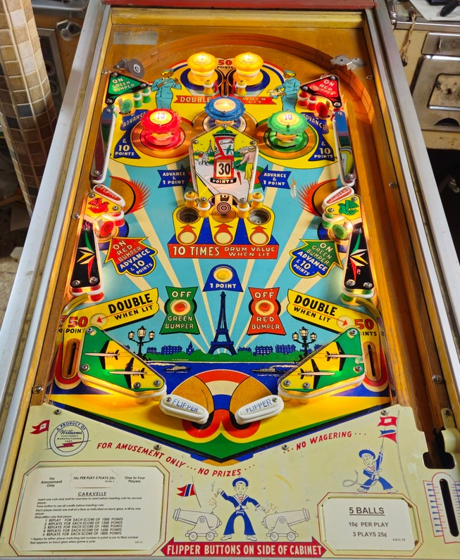

1-point switch hits around the game move a "increased value" light around the game. The solo top lane scores 50 points or 100 when lit; it is lit when the yellow passive bumpers on etiher side are lit (the passive bumpers always score 1 point). The other positions for the "increased value" light are the two out lanes which score 50 points or 100 when lit, the two gobble holes, and the center standup target.
Any switch labelled advance (the top left and right standups, the lower left and right standups, and the side walls of the center structure) moves the reel in the center of the game, which can read 10, 20, 30, 40, or 50 points. Making either gobble hole or the center standup target scores the displayed value, unless the made feature is lit, in which case it scores 10x the reel value, which can be up to 500 points.
The blue pop bumper scores 1 point and advances the center reel. The upper left standup target lights the green pop bumper on the right for 10 points instead of 1, and the upper right standup target does the same for the red pop bumper on the left. The red and green bumpers can also be turned on by the lower left and right standup targets respectively. The bumpers turn off by pressing the Off Red and Off Green rollover buttons near the flippers.
There is no end of ball bonus or extra ball feature. Tilt ends game, but only for the player who tilted.
The below picture of Caravelle's playfield was taken from the Internet Pinball Database, where it was originally provided by Tom Bagaglia.
